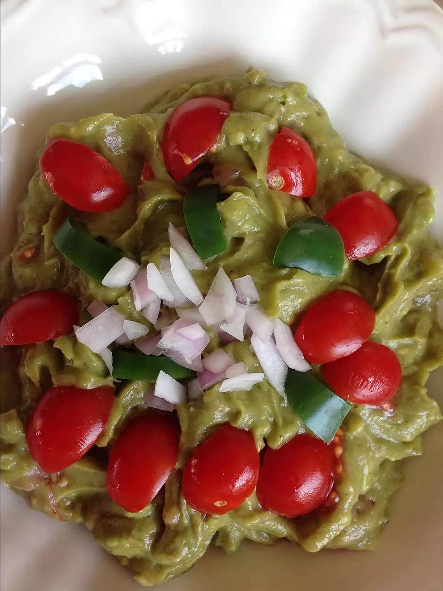

Guacamole
Description

This guacamole is great! Whether or not you want it spicy,
this guacamole is a dip to die for! Makes 4 servings
Ingredients
- 2 avocados, peeled and pitted
- 1 cup chopped tomatoes
- Quarter cup chopped onion
- Quarter cup chopped cilantro
- 2 tablespoons lemon juice
- 1 jalapeno pepper, seeded and minced (optional)
- Salt and pepper to taste
Steps
- Mash avocados in a bowl until creamy
- Mix tomatoes, onion, cilantro, lemon juice, and jalapeno pepper into
mashed avocado until well combined:; season with salt and pepper